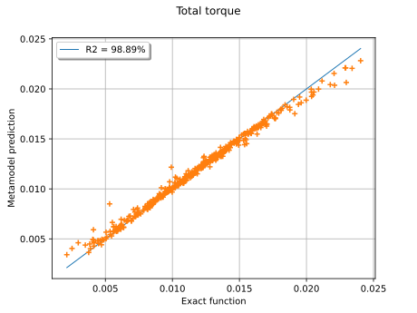
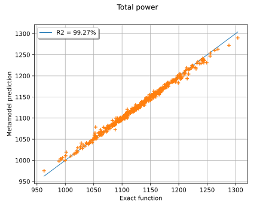
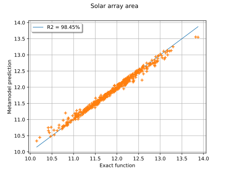

Note
Go to the end to download the full example code.
Multi-output Gaussian Process Regression on the fire satellite model¶
This example aims to illustrate Gaussian Process Fitter (Kriging) metamodel with several outputs on the fire satellite model.
Loading of the model¶
This model involves 9 input variables and 3 output variables. We load the Fire satellite use case.
import openturns as ot
from openturns.usecases.fire_satellite import FireSatelliteModel
import openturns.experimental as otexp
import openturns.viewer as otv
We define the function that evaluates the outputs depending on the inputs.
m = FireSatelliteModel()
model = m.model
We also define the distribution of input variables to build the training and test sets.
inputDistribution = m.distribution
Generation of data¶
We now generate the input and output training sets as 10 times the dimension of the input vector.
experiment = ot.LHSExperiment(inputDistribution, 10 * m.dim)
inputTrainingSet = experiment.generate()
outputTrainingSet = model(inputTrainingSet)
print("Lower and upper bounds of inputTrainingSet:")
print(inputTrainingSet.getMin(), inputTrainingSet.getMax())
Lower and upper bounds of inputTrainingSet:
[1.51682e+07,887.129,1348.53,12.4228,1.00107,0.269929,2.60879,0.972964,0.274082] [2.04071e+07,1122.44,1445.97,17.4763,3.19127,0.750975,7.3782,3.01005,1.69896]
Creation of metamodel¶
We choose to use a constant trend.
linear_basis = ot.LinearBasisFactory(m.dim).build()
basis = ot.Basis(
[
ot.AggregatedFunction([linear_basis.build(k)] * 3)
for k in range(linear_basis.getSize())
]
)
We would like to have separate covariance models for the three outputs.
To do so, we use the TensorizedCovarianceModel.
For the purpose of illustration, we consider MaternModel for the first and third outputs, and SquaredExponential for the second output.
myCov1 = ot.MaternModel([1.0] * m.dim, 2.5)
myCov2 = ot.SquaredExponential([1.0] * m.dim)
myCov3 = ot.MaternModel([1.0] * m.dim, 2.5)
covarianceModel = ot.TensorizedCovarianceModel([myCov1, myCov2, myCov3])
We can now define the GP fitter model.
fitter_algo = otexp.GaussianProcessFitter(
inputTrainingSet, outputTrainingSet, covarianceModel, basis
)
fitter_algo.setOptimizeParameters(True)
We run the algorithm and get the metamodel.
fitter_algo.run()
fitter_result = fitter_algo.getResult()
gpr_algo = otexp.GaussianProcessRegression(fitter_result)
gpr_algo.run()
gpr_result = gpr_algo.getResult()
gprMetamodel = gpr_result.getMetaModel()
Validation of metamodel¶
To validate the metamodel, we create a validation set of size equal to 50 times the input vector dimension to evaluate the functions.
ot.RandomGenerator.SetSeed(1)
experimentTest = ot.LHSExperiment(inputDistribution, 50 * m.dim)
inputTestSet = experimentTest.generate()
outputTestSet = model(inputTestSet)
Then, we use the MetaModelValidation class to validate the metamodel.
metamodelPredictions = gprMetamodel(inputTestSet)
val = ot.MetaModelValidation(outputTestSet, metamodelPredictions)
r2Score = val.computeR2Score()
print("R2=", r2Score)
R2= [0.988917,0.992692,0.984453]
Graphical validation
label = ["Total torque", "Total power", "Solar array area"]
for i in range(3):
graph = val.drawValidation().getGraph(0, i)
graph.setLegends([""])
graph.setLegends(["R2 = %.2f%%" % (100 * r2Score[i]), ""])
graph.setLegendPosition("upper left")
graph.setXTitle("Exact function")
graph.setYTitle("Metamodel prediction")
graph.setTitle(label[i])
otv.View(graph)
- 
- 
- 
otv.View.ShowAll()